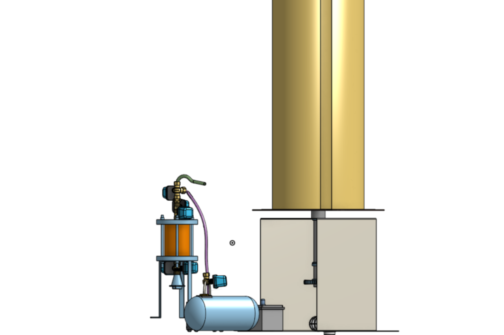
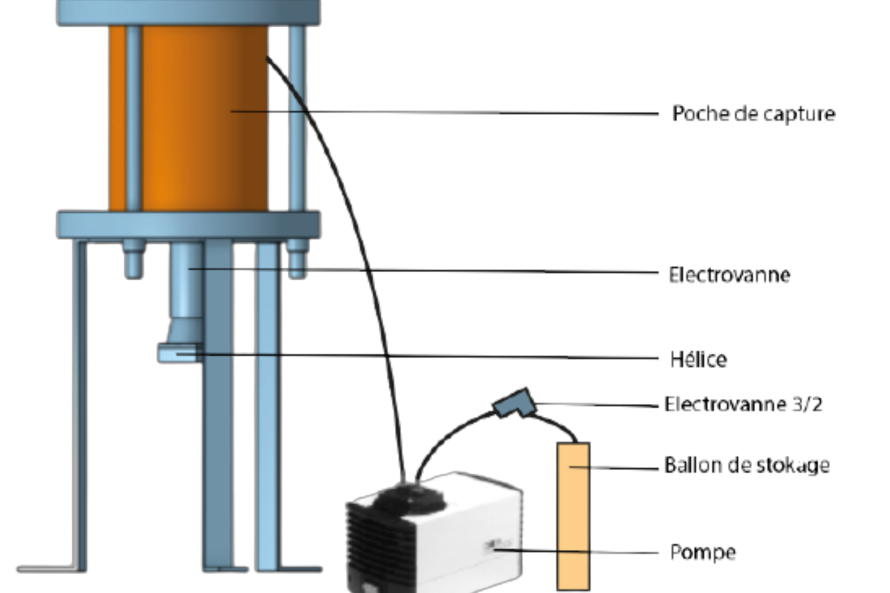
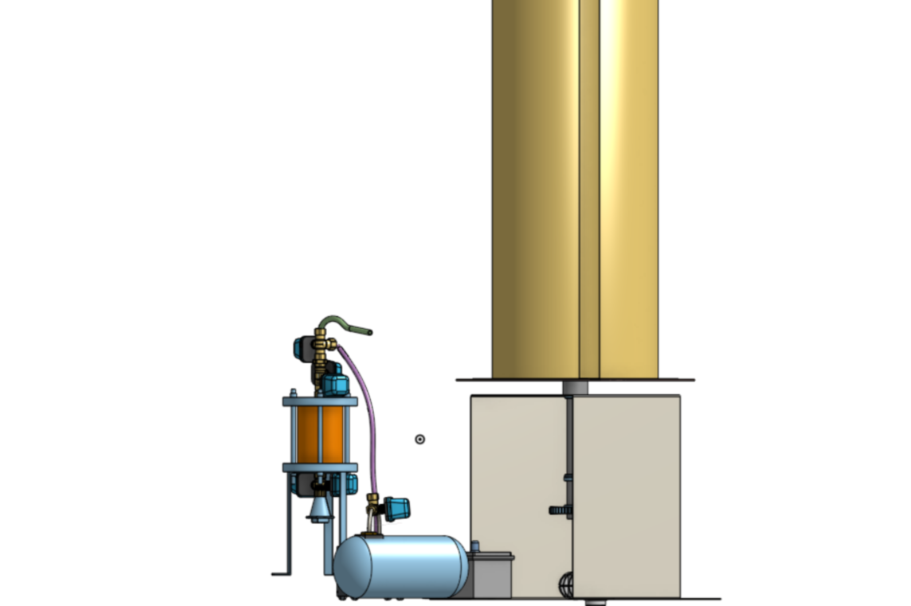
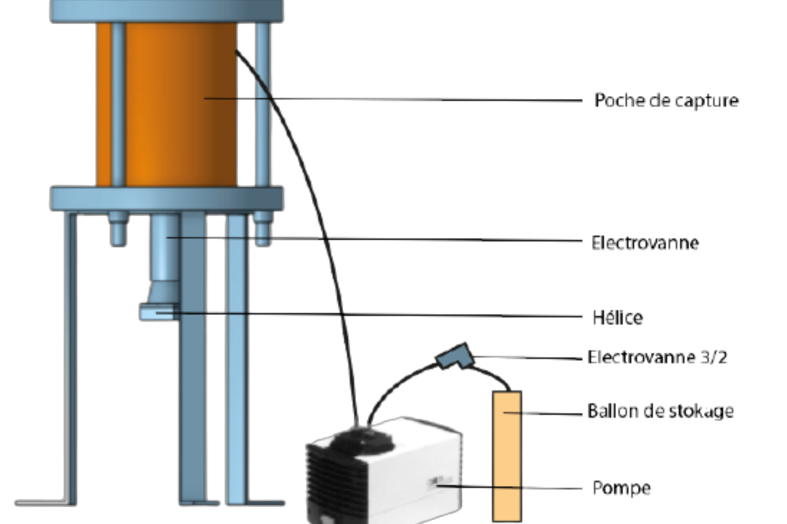

URBAN WIND TURBINE CAPTURING CO2
 



CONTEXT
As part of my studies at Centrale Lille, I participated in the construction of an urban
wind turbine capable of capturing CO2. This project was given to us by the company HIVE electric
(battery manufacturer), eagers to use their batteries for an ecological purpose. We formed a group
of 10 students volunteer to carry out this project for one and a half years. We imagined, designed
and built a wind turbine capable of capturing CO2. I really enjoyed this project for its creative
aspect almost research-like approach.
Our system consists of a wind turbine that provides energy and a capture bag that captures the CO2
and stores it in a balloon. Our capture system works thanks to the use of microporous materials.
MODELISATION
We modelled this system with Onshape and Catia5. Thanks to these softwares we made definition drawings which helped us to machine and assemble each part.Below you can see the definition drawings of the wind turbine on the left and in the middle and on the right an onshape model of the capture bag.
CONSTRUCTION AND RESULTS
We realized our prototype thanks to the funds donated by the company HIVE electric and thanks to the laboratory and equipment of Centrale Lille. The capture bag was made of aluminium for thermal reasons and the wind turbine of steel.